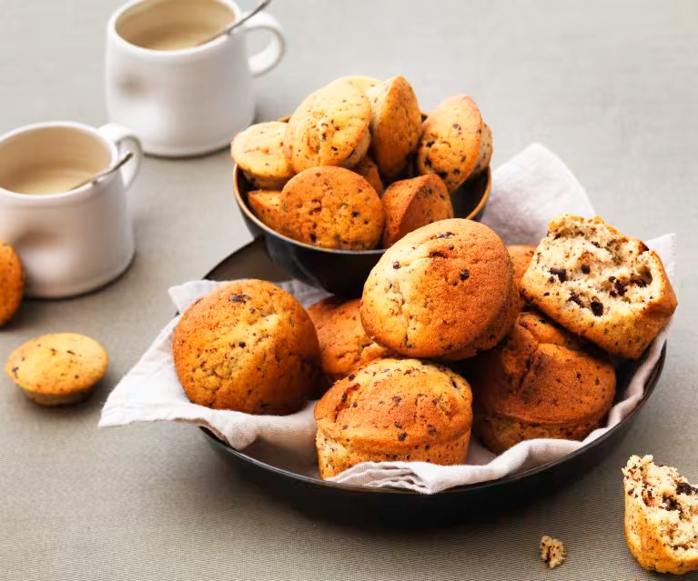

Muffins aux pépites de chocolat
Ingredients
12×
- 100 g de chocolat noir
- 150 g de beurre
- 2 oeufs
- 200 g de sucre
- 300 g de farine
- 1 pincée de sel
- 300 g de lait
- 2 c. à c. de levure chimique

Préparation
Étape 1
Préchauffer le four à 180ºC. Beurrer une plaque à muffins.
Étape 2
Mettre 100 g de chocolat noir dans le bol et râper 6-10 sec/vitesse 5. Réserver.
Étape 3
Mettre 150 g de beurre, 2 oeufs, 200 g de sucre, 300 g de farine, 1 pincée de sel, 300 g de lait et 2 c. à c. de levure chimique dans le bol. Mixer 30 sec/vitesse 5.
Étape 4
Ajouter le chocolat et mélanger 15 sec/sens inverse/vitesse 4. Répartir dans la plaque et cuire 30min, jusqu’à coloration dorée. Laisser refroidir 10min avant de démouler.
Conseils
- Double chocolat : enfoncer un carré de chocolat dans chaque muffin avant cuisson.
- Myrtilles : remplacer le chocolat par 150g de myrtilles, mélangées 10 sec/sens inverse/vitesse 1.